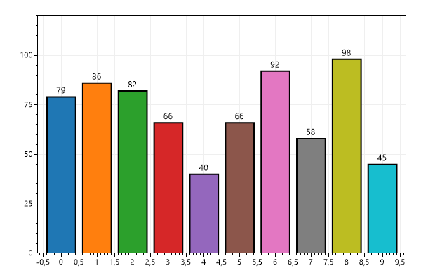
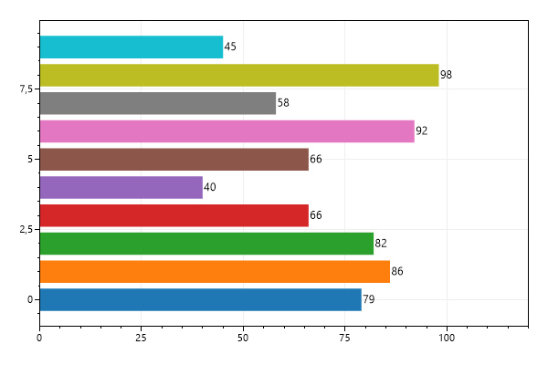
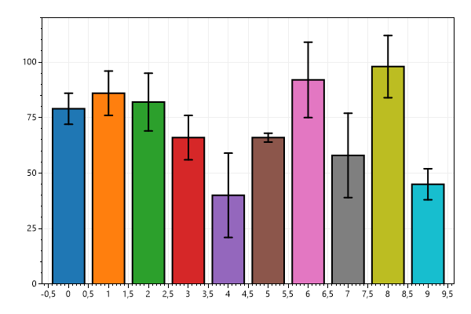
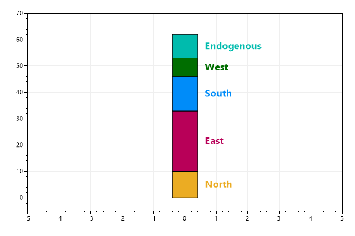
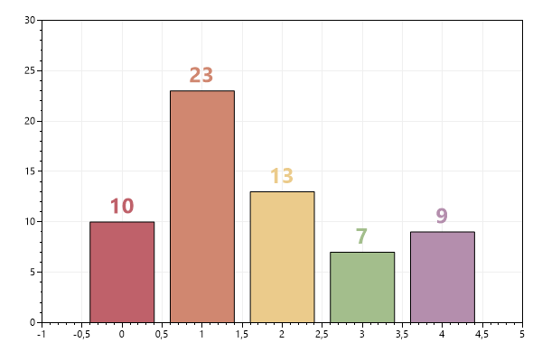

This page contains recipes for the Bar Series category.
Visit the Cookbook Home Page to view all cookbook recipes.
Visit the Cookbook Home Page to view all cookbook recipes.
BarSeries Quickstart
A BarSeries plot allows each Bar to be created and customized individually.
var plt = new ScottPlot.Plot(600, 400); // Create a collection of Bar objects Random rand = new(0); Listbars = new(); for (int i = 0; i < 10; i++) { int value = rand.Next(25, 100); ScottPlot.Plottable.Bar bar = new() { // Each bar can be extensively customized Value = value, Position = i, FillColor = ScottPlot.Palette.Category10.GetColor(i), Label = value.ToString(), LineWidth = 2, }; bars.Add(bar); }; // Add the BarSeries to the plot plt.AddBarSeries(bars); plt.SetAxisLimitsY(0, 120); plt.SaveFig("barseries_quickstart.png");
BarSeries Horizontal
Horizontal orientation can be achieved by customizing the IsVertical property of each Bar.
var plt = new ScottPlot.Plot(600, 400); Random rand = new(0); Listbars = new(); for (int i = 0; i < 10; i++) { int value = rand.Next(25, 100); ScottPlot.Plottable.Bar bar = new() { Value = value, Position = i, FillColor = ScottPlot.Palette.Category10.GetColor(i), Label = value.ToString(), IsVertical = false, // ENABLE HORIZONTAL ORIENTATION }; bars.Add(bar); }; plt.AddBarSeries(bars); plt.SetAxisLimitsX(0, 120); plt.SaveFig("barseries_horizontal.png");
BarSeries with Error Bars
Combine a BarSeries plot with an ErrorBar plot to achieve this effect.
var plt = new ScottPlot.Plot(600, 400); // Create and add Bar objects to the plot Random rand = new(0); Listbars = new(); for (int i = 0; i < 10; i++) { int value = rand.Next(25, 100); ScottPlot.Plottable.Bar bar = new() { Value = value, Position = i, FillColor = ScottPlot.Palette.Category10.GetColor(i), LineWidth = 2, }; bars.Add(bar); }; plt.AddBarSeries(bars); // Add error bars on top of the BarSeries plot double[] xs = bars.Select(x => x.Position).ToArray(); double[] xErrs = bars.Select(x => (double)0).ToArray(); double[] ys = bars.Select(x => x.Value).ToArray(); double[] yErrs = bars.Select(x => (double)rand.Next(2, 20)).ToArray(); var err = plt.AddErrorBars(xs, ys, xErrs, yErrs); err.LineWidth = 2; err.CapSize = 5; err.LineColor = Color.Black; plt.SetAxisLimitsY(0, 120); plt.SaveFig("barseries_error.png");
Stacked Bar Plot
By customizing each Bar of a BarSeries we can achieve a stacked bar plot. Text objects can be added to the plot to serve as labels.
var plt = new ScottPlot.Plot(600, 400);
// This is the source data
double[] values = { 10, 23, 13, 7, 9 };
string[] labels = { "North", "East", "South", "West", "Endogenous" };
// Add a BarSeries to the plot
BarSeries barSeries = plt.AddBarSeries();
// Manually add each Bar to the BarSeries
double lastBarTop = 0;
IPalette palette = new ScottPlot.Palettes.Tsitsulin();
for (int i = 0; i < values.Length; i++)
{
// Determine how high the bar should be
double barTop = lastBarTop + values[i];
double barBottom = lastBarTop;
lastBarTop += values[i];
// Add a bar to the existing BarSeries
Bar bar = new()
{
Value = barTop,
ValueBase = barBottom,
FillColor = palette.GetColor(i),
LineColor = Color.Black,
LineWidth = 1,
};
barSeries.Bars.Add(bar);
// Add a text object to the plot to label this bar
double barMiddle = (barBottom + barTop) / 2;
var txt = plt.AddText(labels[i], .6, barMiddle);
txt.Font.Alignment = Alignment.MiddleLeft;
txt.Font.Size = 16;
txt.Font.Bold = true;
txt.Color = bar.FillColor; // match text and bar
}
// Set the axis limits for a pretty figure
plt.SetAxisLimits(-5, 5, -5, 70);
plt.SaveFig("barseries_stacked.png");

Custom Label
Value labels above bars can be customized.
var plt = new ScottPlot.Plot(600, 400);
// This is the data we will plot
double[] values = { 10, 23, 13, 7, 9 };
// Create a palette to use for bar and label colors
IPalette myPalette = new ScottPlot.Palettes.Aurora();
// Add a BarSeries to the plot
BarSeries barSeries = plt.AddBarSeries();
// iterate values
for (int i = 0; i < values.Length; i++)
{
// add a bar to the bar series
Bar bar = new()
{
Value = values[i],
Position = i,
FillColor = myPalette.GetColor(i),
LineColor = Color.Black,
LineWidth = 1,
};
barSeries.Bars.Add(bar);
// add a label and customize it as desired
var txt = plt.AddText(values[i].ToString(), i, values[i]);
txt.Color = myPalette.GetColor(i);
txt.Font.Alignment = Alignment.LowerCenter;
txt.Font.Size = 24;
txt.Font.Bold = true;
}
plt.SetAxisLimits(-1, 5, 0, 30);
plt.SaveFig("barseries_custom_label.png");
